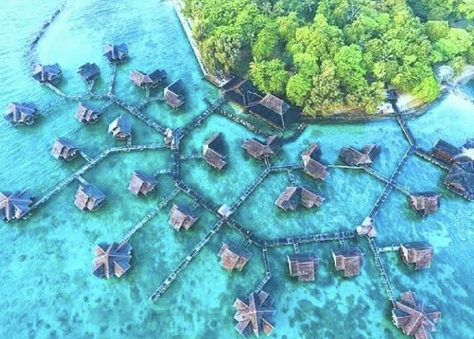
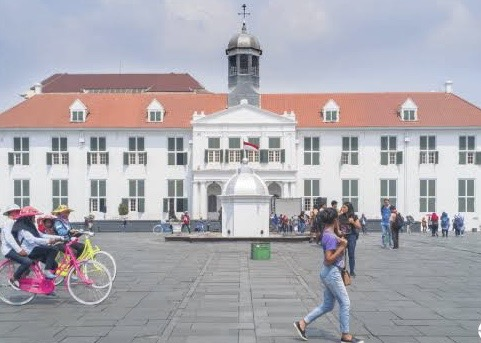

Dufan is Jakarta's super fun amusement park! It's where you can
scream your heart out on thrilling rides, enjoy cool
attractions, and have a blast with your family. Located up north
in Jakarta, it's famous for its awesome roller coasters and
water rides.

Pulau Seribu (Thousands Island)
Don't be fooled by the name; there are around 110 islands here,
each with stunning beaches and clear waters. It's the perfect
spot for water sports, snorkeling, and chilling out in a
beautiful paradise.

Kota Tua
(Old Town Jakarta)
It's Jakarta's historic neighborhood with charming old buildings
and cobblestone streets. You'll find cool museums, artsy spots,
cozy cafes, and even lively street markets. It's a bit like
going on a journey back in time to discover Jakarta's past.